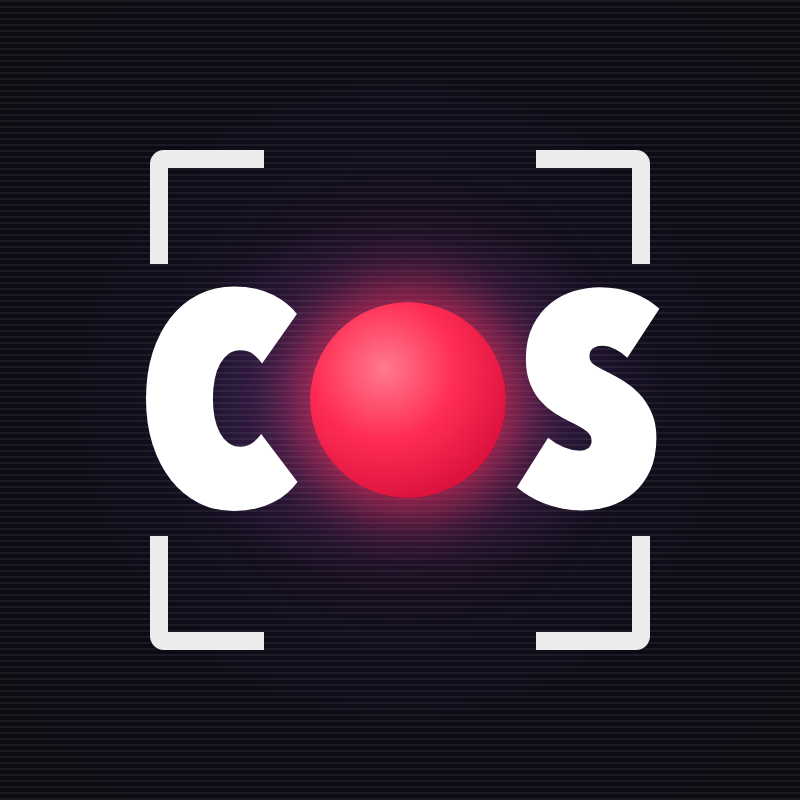

CAUGHT ON STREAM
The wildest, funniest moments from livestreams, cut into Shorts.
This site is the homepage of the Caught On Stream YouTube channel and its upload tool, which posts our own Shorts to our own channel through the YouTube Data API.